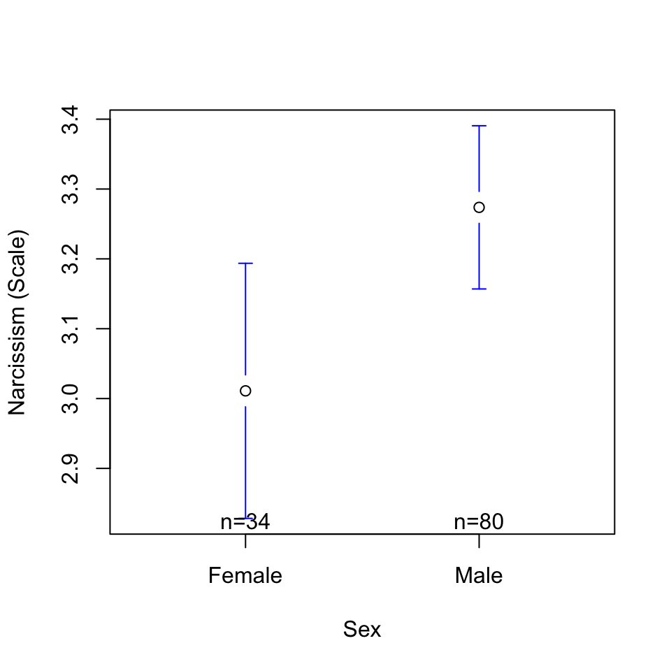
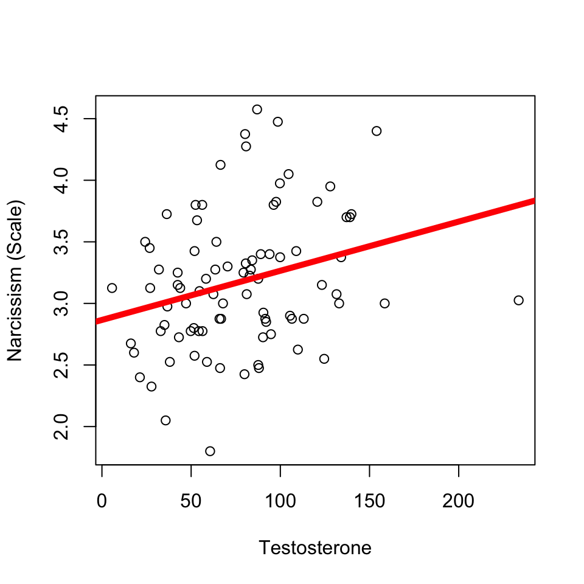

Multiple Regression
Sex is related to narcissism.

| Model 1 | ||
|---|---|---|
| Sex (Male) | 0.263 * | |
| N | 114 | |
| R2 | 0.051 | |
| *** p < 0.001; ** p < 0.01; * p < 0.05. | ||
Testosterone is related to narcissism…

| Model 1 | ||
|---|---|---|
| Testosterone | 0.004 ** | |
| N | 86 | |
| R2 | 0.078 | |
| *** p < 0.001; ** p < 0.01; * p < 0.05. | ||
but if testosterone is related to sex…
How are they uniquely related?
| Model 1 | Model 2 | Model 3 | ||||
|---|---|---|---|---|---|---|
| Testosterone | 0.004 ** | 0.004 * | ||||
| Sex (Male) | 0.263 * | 0.011 | ||||
| N | 114 | 86 | 86 | |||
| R2 | 0.051 | 0.078 | 0.078 | |||
| *** p < 0.001; ** p < 0.01; * p < 0.05. | ||||||
- “Independent” Effect. The slope of the IV does not change when other variables are added to the model.
- “Suppression” Effect. The slope of the IV gets stronger (in either direction) when other variables are added to the model.
- “Mediation” Effect. The slope of the IV gets closer to zero when other variables are added to the model. Careful : “mediation” often implies some causal relationship, and it is very hard (/impossible?) to estimate causal relationships without experimental methods. Some links below that go deeper into this.
More Examples


The Theory
scale : The variable that you want to measure as a continuous variable.
items : The specific question(s) in the scale. Each item measures some aspect of the variable the researcher is interested in.
positively keyed items : An item that measures the high end of the scale, where answering “yes” to the question means you are high on this variable.
negatively keyed items : An item that measures the low end of the scale, where answering “yes” to the question means you are low on the variable.
response scale : How people answer the scale items.